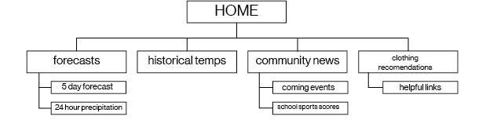

SITE PURPOSE AND GOALS
This site will serve the needs of residents of Perkasie, Pennsylvania, giving them the local weather and recommendations for the appropriate clothing for school children depending on the forecast. It will use the latest in web technology to be a helpful tool for parents, teachers, and administrators as they navigate Southeastern Pennsylvania's varied climate. The site will be easy to use, even for a children, intuitive, beautiful, and its recommendations will be helpful and applicable to real-world situations.
SITE PLAN
LOGO
Inspired by a historic Buck's County farmhouse, the logo pays hommage to the original weather forecaster of the region: the weather vane.
SITE ADDRESS: www.pennridgeoutdoor.com
the website's url will be www.pennridgeoutdoor.com, which is available for $12 per year.